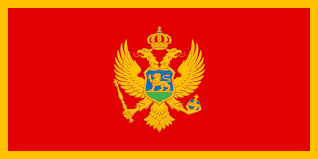

<div id="map"></div>
<div class="vanmape">
  <div class="dugmici">
    <label>
      <input type="radio" id="option1" name="option1" [(ngModel)]="selectedOption" value="POIS" (change)="onOptionChange()">
      Show POIS
    </label>
    <label>
      <input type="radio" id="option2" name="option1" [(ngModel)]="selectedOption" value="Restaurants" (change)="onOptionChange()">
      Show Restaurants
    </label>
    <label>
      <input type="radio" id="option3" name="option1" [(ngModel)]="selectedOption" value="Accommodations" (change)="onOptionChange()">
      Show Accommodations
    </label>
    <label>
      <input type="radio" id="option4" name="option1" [(ngModel)]="selectedOption" value="ChargingStations" (change)="onOptionChange()">
      Show Charging Stations
    </label>
    <label>
      <input type="radio" id="option5" name="option1" [(ngModel)]="selectedOption" value="None" (change)="onOptionChange()">None
    </label>
  </div>
  <div class="Info">
    <div class="predlozi">
      <div class="naslov">
        <h2>Recommenended breaks</h2>
        <div *ngIf="proposedPOIS" class="predlozenaOdmaralista">
          <app-list-rest-areas [arrayRestAreas]="proposedPOIS" [startPoint]="startPoint"></app-list-rest-areas>
        </div>
        <div *ngIf="proposedRestaurants" class="predlozenaOdmaralista">
          <app-list-rest-areas [arrayRestAreas]="proposedRestaurants" [startPoint]="startPoint"></app-list-rest-areas>
        </div>
      </div>
    </div>
    <div class="sve granice">
      <div class="granica">
        <div class="naslovDiv">
          <h1 class="naslovGranica">Border crossings Hungary</h1>
          
        </div>
        <a class="putanjaDoGranicu" target="_blank" href="http://www.mup.gov.rs/wps/portal/sr/kamer%D0%B5/!ut/p/z1/04_Sj9CPykssy0xPLMnMz0vMAfIjo8ziDY0sjTyM3Q18DAwtDA0CvY0cA4wCvI0MjMz1C7IdFQH3yjKr/#!">Border crossing Cala</a>
        <a class="putanjaDoGranicu" target="_blank" href="http://www.mup.gov.rs/wps/portal/sr/kamer%D0%B5/!ut/p/z1/04_Sj9CPykssy0xPLMnMz0vMAfIjo8ziDY0sjTyM3Q18DAwtDA0CvY0cA4wCvI0MjMz1C7IdFQH3yjKr/#!">Border crossing Kelebija</a>
        <a class="putanjaDoGranicu" target="_blank" href="http://www.mup.gov.rs/wps/portal/sr/kamer%D0%B5/!ut/p/z1/04_Sj9CPykssy0xPLMnMz0vMAfIjo8ziDY0sjTyM3Q18DAwtDA0CvY0cA4wCvI0MjMz1C7IdFQH3yjKr/#!">Border crossing Horgos</a>
      </div>
      <div class="granica">
        <div class="naslovDiv">
          <h1 class="naslovGranica">Border crossings Montenegro</h1>
          
        </div>
        <a class="putanjaDoGranicu" target="_blank" href="http://www.mup.gov.rs/wps/portal/sr/kamer%D0%B5/!ut/p/z1/04_Sj9CPykssy0xPLMnMz0vMAfIjo8ziDY0sjTyM3Q18DAwtDA0CvY0cA4wCvI0MjMz1C7IdFQH3yjKr/#!">Border crossing Jabuka</a>
        <a class="putanjaDoGranicu" target="_blank" href="http://www.mup.gov.rs/wps/portal/sr/kamer%D0%B5/!ut/p/z1/04_Sj9CPykssy0xPLMnMz0vMAfIjo8ziDY0sjTyM3Q18DAwtDA0CvY0cA4wCvI0MjMz1C7IdFQH3yjKr/#!">Border crossing Gostun</a>
        <a class="putanjaDoGranicu" target="_blank" href="http://www.mup.gov.rs/wps/portal/sr/kamer%D0%B5/!ut/p/z1/04_Sj9CPykssy0xPLMnMz0vMAfIjo8ziDY0sjTyM3Q18DAwtDA0CvY0cA4wCvI0MjMz1C7IdFQH3yjKr/#!">Border crossing Spiljani</a>
      </div>
      <div class="granica">
        <div class="naslovDiv">
          <h1 class="naslovGranica">Border crossings Croatia</h1>
          
        </div>
        <a class="putanjaDoGranicu" target="_blank" href="http://www.mup.gov.rs/wps/portal/sr/kamer%D0%B5/!ut/p/z1/04_Sj9CPykssy0xPLMnMz0vMAfIjo8ziDY0sjTyM3Q18DAwtDA0CvY0cA4wCvI0MjMz1C7IdFQH3yjKr/#!">Border crossing Batrovci</a>
        <a class="putanjaDoGranicu" target="_blank" href="http://www.mup.gov.rs/wps/portal/sr/kamer%D0%B5/!ut/p/z1/04_Sj9CPykssy0xPLMnMz0vMAfIjo8ziDY0sjTyM3Q18DAwtDA0CvY0cA4wCvI0MjMz1C7IdFQH3yjKr/#!">Border crossing Sid</a>
      </div>
      <div class="granica">
        <div class="naslovDiv">
          <h1 class="naslovGranica">Border crossings Romania</h1>
          
        </div>
        <a class="putanjaDoGranicu" target="_blank" href="http://www.mup.gov.rs/wps/portal/sr/kamer%D0%B5/!ut/p/z1/04_Sj9CPykssy0xPLMnMz0vMAfIjo8ziDY0sjTyM3Q18DAwtDA0CvY0cA4wCvI0MjMz1C7IdFQH3yjKr/#!">Border crossing Vatin</a>
      </div>
      <div class="granica">
        <div class="naslovDiv">
          <h1 class="naslovGranica">Border crossings Bosnia And Herzegovina</h1>
          
        </div>
        <a class="putanjaDoGranicu" target="_blank" href="http://www.mup.gov.rs/wps/portal/sr/kamer%D0%B5/!ut/p/z1/04_Sj9CPykssy0xPLMnMz0vMAfIjo8ziDY0sjTyM3Q18DAwtDA0CvY0cA4wCvI0MjMz1C7IdFQH3yjKr/#!">Border crossing to Kotroman</a>
        <a class="putanjaDoGranicu" target="_blank" href="http://www.mup.gov.rs/wps/portal/sr/kamer%D0%B5/!ut/p/z1/04_Sj9CPykssy0xPLMnMz0vMAfIjo8ziDY0sjTyM3Q18DAwtDA0CvY0cA4wCvI0MjMz1C7IdFQH3yjKr/#!">Border crossing to Mali Zvornik</a>
        <a class="putanjaDoGranicu" target="_blank" href="http://www.mup.gov.rs/wps/portal/sr/kamer%D0%B5/!ut/p/z1/04_Sj9CPykssy0xPLMnMz0vMAfIjo8ziDY0sjTyM3Q18DAwtDA0CvY0cA4wCvI0MjMz1C7IdFQH3yjKr/#!">Border crossing to Sremska Raca</a>
        <a class="putanjaDoGranicu" target="_blank" href="http://www.mup.gov.rs/wps/portal/sr/kamer%D0%B5/!ut/p/z1/04_Sj9CPykssy0xPLMnMz0vMAfIjo8ziDY0sjTyM3Q18DAwtDA0CvY0cA4wCvI0MjMz1C7IdFQH3yjKr/#!">Border crossing to Trbusnica</a>
      </div>
      <div class="granica">
        <div class="naslovDiv">
          <h1 class="naslovGranica">Border crossings Bulgaria</h1>
          
        </div>
        <a class="putanjaDoGranicu" target="_blank" href="http://www.mup.gov.rs/wps/portal/sr/kamer%D0%B5/!ut/p/z1/04_Sj9CPykssy0xPLMnMz0vMAfIjo8ziDY0sjTyM3Q18DAwtDA0CvY0cA4wCvI0MjMz1C7IdFQH3yjKr/#!">Border crossing to Vrska Cuka</a>
        <a class="putanjaDoGranicu" target="_blank" href="http://www.mup.gov.rs/wps/portal/sr/kamer%D0%B5/!ut/p/z1/04_Sj9CPykssy0xPLMnMz0vMAfIjo8ziDY0sjTyM3Q18DAwtDA0CvY0cA4wCvI0MjMz1C7IdFQH3yjKr/#!">Border crossing to Gradina</a>
      </div>
      <div class="granica">
        <div class="naslovDiv">
          <h1 class="naslovGranica">Border crossings North Macedonia</h1>
          
        </div>
        <a class="putanjaDoGranicu" target="_blank" href="http://www.mup.gov.rs/wps/portal/sr/kamer%D0%B5/!ut/p/z1/04_Sj9CPykssy0xPLMnMz0vMAfIjo8ziDY0sjTyM3Q18DAwtDA0CvY0cA4wCvI0MjMz1C7IdFQH3yjKr/#!">Border crossing to Presevo</a>
      </div>
    </div>
    <div class="zadugme">
      <button class="dugme" (click)="saveTravel()">Delete</button>
      <button class="dugme">Go back</button>
    </div>
  </div>
</div>


